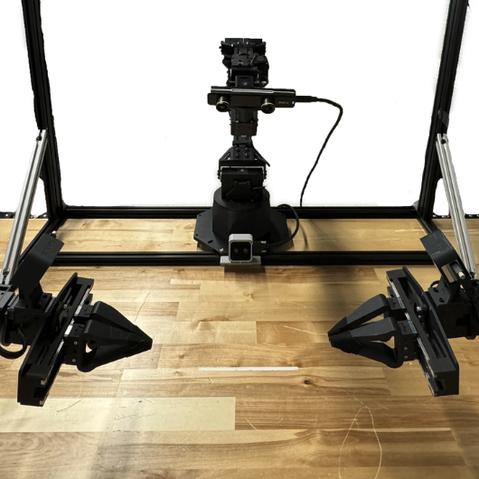
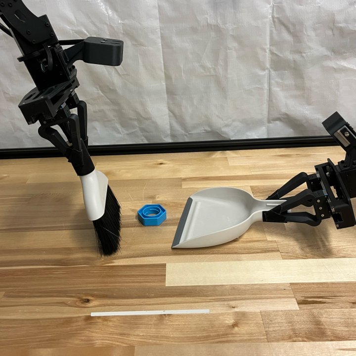
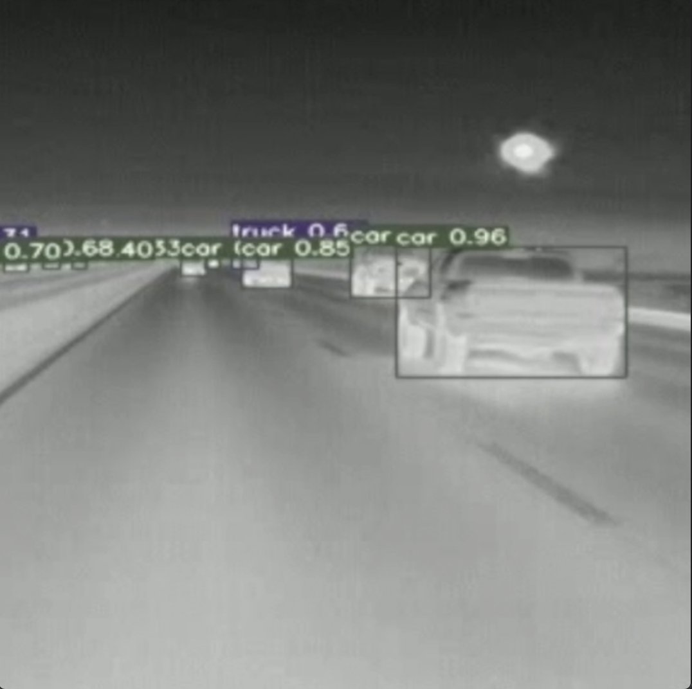

|
Andrew Lee I am a Ph.D. student in the Department of Computer Science at the University of California, Davis, where I am part of the Laboratory for AI, Robotics and Automation (LARA), advised by Iman Soltani. Previously, I received a B.S. in Mechanical Engineering from Hanyang University in Seoul, South Korea. I am interested in making robots learn to manipulate objects and interact with the world in ways similar to humans, mimicking how we coordinate our arms and eyes to perform tasks. Email / CV / Google Scholar / Linkedin / X (Twitter) / Github |
News |
Publications |
|

|
Active Vision Might Be All You Need: Exploring Active Vision in Bimanual Robotic Manipulation
Ian Chuang*, Andrew Lee*, Dechen Gao, Iman Soltani *Equal Contribution In review at a conference project page / video / arXiv We introduce AV-ALOHA, a bimanual robot system with 7-DoF Active Vision which is solely tasked with finding the optimal perspective for a given task. |
|

|
InterACT: Inter-dependency Aware Action Chunking with Hierarchical Attention Transformers for Bimanual Manipulation
Andrew Lee, Ian Chuang, Ling-Yuan Chen, Iman Soltani Conference on Robot Learning (CoRL), 2024 project page / OpenReview / arXiv InterACT is a novel imitation learning framework for bimanual manipulation that integrates hierarchical attention to capture inter-dependencies between dual-arm joint states and visual inputs. |
Experiences |
|
Graduate Student Researcher at Laboratory for AI, Robotics and Automation (LARA)
2023.05 ~ Present, Davis, CA |
Projects |

|
Autonomous ADA compliant ramp detector and measurment system
Project funded by Caltrans Development of an Americans with Disabilities Act of 1990 (ADA) compliant ramp detector and measurement system that will provide Caltrans with the ability to monitor and enforce ADA compliance on pedestrian ramps. |
|

|
Infrared (IR) Advanced Driver Assistance System (ADAS)
Project funded by Caltrans Development of an Infrared Advanced Driver Assistance Systems (ADAS) that will improve the safety and efficiency of emergency tow truck and snowplow operations under low-visibility conditions, by providing providing operators with warning systems and the ability to observe and avoid obstacles. |
Honors and Awards |
| 2024 GGCS Summer Ph.D Fellowship |
|
|